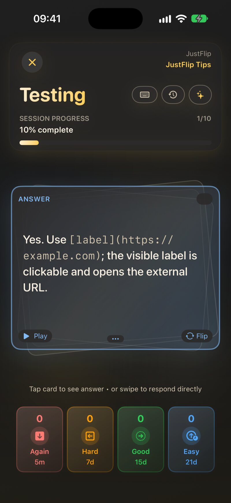
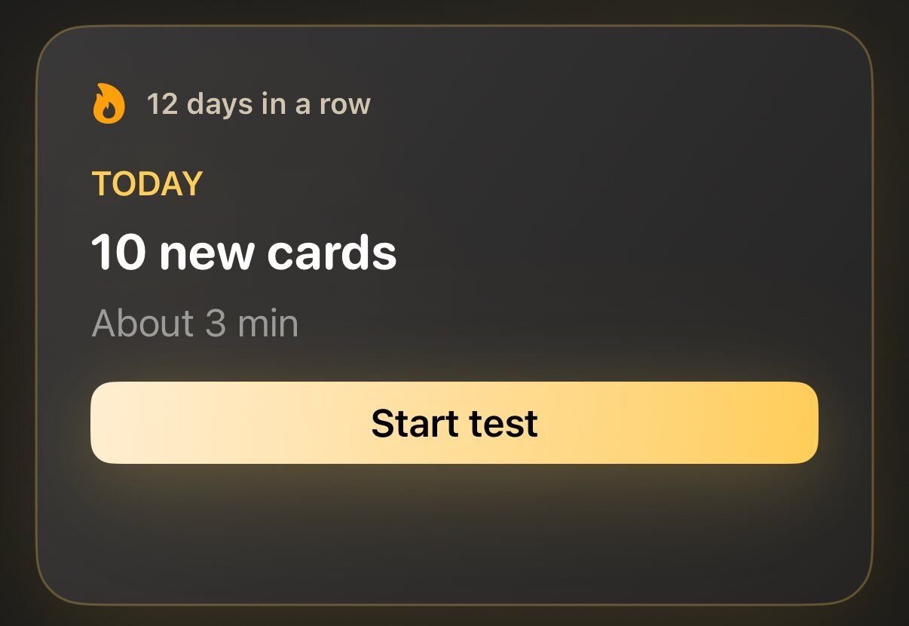
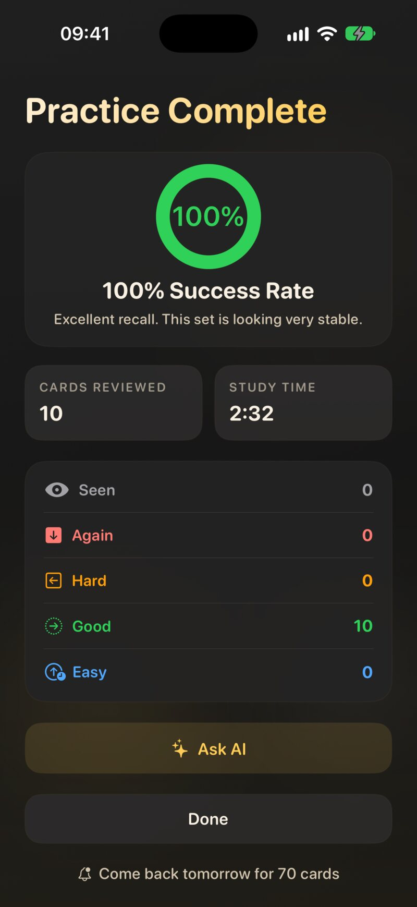

2.1 Der Wiederholungsablauf
Jede Wiederholung läuft gleich ab:
- Lies die Frage und versuch, dich an die Antwort zu erinnern. Gib dir wirklich Mühe: Genau diese Anstrengung beim Erinnern sorgt dafür, dass es hängen bleibt.
- Dreh die Karte um. Tippe sie an oder drück auf einer Tastatur die Leertaste.
- Bewerte dich. Tippe an, wie gut du es wusstest, oder wische die Karte.
- Die nächste Karte gleitet herein. Ein kurzer Hinweis unten, etwa Nächste: 3 T., sagt dir, wann die gerade bewertete Karte wiederkommt.
Der Balken oben zeigt, wie weit du in der Sitzung bist. Willst du früher aufhören, schließ die Sitzung und bestätige mit Beenden. Alles, was du bis dahin bewertet hast, bleibt gespeichert; die Sitzung zählt nur nicht als abgeschlossen.

Du musst gar nicht umdrehen. Wusstest du die Antwort sofort, bewerte direkt die Frageseite mit einer Taste oder einem Wischen. Der Hinweis unter der Karte sagt es auch: Karte antippen, um die Antwort zu sehen • oder wischen, um direkt zu antworten.
2.2 Die vier Bewertungen
Die Bewertungstasten liegen unter der Karte. Jede zeigt das Intervall, das sie dieser Karte geben würde, sodass du immer weißt, was du wählst.
| Bewertung | Farbe | Taste | Wischen | Bedeutet | Eine neue Karte kommt zurück in |
|---|---|---|---|---|---|
| Nochmal | Rot | 1 | Nach unten | Du wusstest es nicht | 5 Minuten |
| Schwer | Orange | 2 | Nach links | Du kamst drauf, mit Mühe | 20 Minuten |
| Gut | Grün | 3 | Nach rechts | Du wusstest es | 1 Tag |
| Leicht | Blau | 4 | Nach oben | Du wusstest es sofort | 4 Tagen |
Nach dem ersten Mal wachsen die Intervalle mit jeder richtigen Antwort. Gut vervielfacht das letzte Intervall, Leicht streckt es noch weiter, Schwer lässt es nur ein wenig wachsen, und Nochmal setzt die Karte mit einem kurzen Schritt zurück an den Anfang. Die Zahlen auf den Tasten ändern sich mit jeder Karte. Die Rechnung dahinter erklärt Kapitel 6.
Es ist verlockend, bei einer Karte, die du fast wusstest, auf Gut zu drücken. Lass es: Die Karte kommt dann erst wieder, wenn sie schon verblasst ist. Ein ehrliches Schwer oder Nochmal kostet dich jetzt einen zusätzlichen Blick und erspart dir später viele. Die Tasten 1–4 und die Leertaste funktionieren auf dem Mac und auf einem iPad mit Tastatur, solange du nicht gerade in ein Textfeld tippst.
2.2.1 Gesehen, die fünfte Antwort
Es gibt noch eine Antwort, die du nie selbst drückst: Gesehen. Wenn du eine Karte zum ersten Mal umdrehst, während du die Kartenliste eines Stapels durchsiehst, also außerhalb einer Wiederholung, vermerkt JustFlip!, dass du sie gesehen hast. Gesehen ist keine Bewertung. Es zählt weder als gewusst noch als nicht gewusst, sondern hält nur fest, dass die Karte nicht mehr unberührt ist. In der Kartenliste kennzeichnet ein graues Auge eine solche Karte, während die anderen Farben die letzte Bewertung zeigen, die du vergeben hast.
2.3 Spicken und strengere Bewertung
Standardmäßig bleiben nach dem Umdrehen alle vier Bewertungen verfügbar, denn umzudrehen, um sich selbst zu prüfen, gehört zum Ablauf. Wenn du lieber streng sein willst, schalte Einstellungen › Verhalten › Strengere Bewertung ein (Optionen beim Umdrehen der Karte einschränken). Standardmäßig ist das aus.
Mit strengerer Bewertung zählt das Umdrehen als Nachschlagen der Antwort. Nur noch Nochmal und Schwer bleiben übrig, Wischen nach rechts und nach oben funktioniert nicht mehr, und der Hinweis ändert sich zu Karte antippen zum Umdrehen • nach links wischen (Schwer) oder nach unten (Nochmal). Um Gut oder Leicht zu geben, bewerte die Frageseite, bevor du umdrehst.
Eine Bildabdeckungskarte lässt sich nicht beantworten, ohne ihre Masken aufzudecken, deshalb zählt das Aufdecken nie als Spicken. Alle vier Bewertungen bleiben verfügbar (Kapitel 4).
2.4 Wo du eine Wiederholung startest
Es gibt drei Stellen, an denen du eine Wiederholung starten kannst, und jede wählt die Karten anders aus.
| Wo | Auswahl | Welche Karten |
|---|---|---|
| Heute (Bildschirm „Interessen“) | Wiederholung starten | Fällige Karten aus allen Interessen, danach neue Karten bis zu deinem Tageskontingent |
| Bildschirm Stapel, Menü ▶ | Fällige Karten | Karten dieses Interesses, deren Wiederholungszeit gekommen ist |
| Schwierige Karten | Karten, die du zuletzt mit Nochmal oder Schwer bewertet hast | |
| Neue Karten | Karten, die du noch nie gelernt hast | |
| Karten (ein Stapel), Menü ▶ | Fällige Karten | Karten dieses Stapels, deren Wiederholungszeit gekommen ist |
| Alle Karten | Jede Karte im Stapel | |
| Schwierige Karten | Karten, die du zuletzt mit Nochmal oder Schwer bewertet hast |
Auf dem Bildschirm „Stapel“ zeigt das Menü neben jedem Eintrag eine Anzahl, etwa Schwierige Karten (6). Ein leerer Eintrag ist ausgegraut. Abgelegte und zurückgestellte Karten sind in jedem Modus außer „Alle Karten“ ausgeschlossen.
Sitzungen mit fälligen, schwierigen und neuen Karten kommen in Portionen von Karten pro Sitzung (Einstellungen › Verhalten, standardmäßig 20). Warten noch mehr Karten, bietet dir der Ergebnisbildschirm an, weiterzumachen.
Alle Karten ist ein Paukmodus. Er zeigt jede Karte im Stapel in gemischter Reihenfolge, auch abgelegte und zurückgestellte Karten, und hört nicht nach einer Portion auf. Deine Bewertungen zählen trotzdem – wer am Abend vor einer Prüfung einen Stapel paukt, verschiebt also auch seinen Plan.
Eine Karte gilt als schwierig, wenn deine letzte Bewertung Nochmal oder Schwer war, auch wenn sie nicht fällig ist. Eine Karte, die du mit Schwer bewertet hast und die erst nächsten Monat dran ist, taucht trotzdem unter „Schwierige Karten“ auf. Genau darum geht es: Das ist der Modus, um Schwachstellen zu üben, nicht, um auf dem Laufenden zu bleiben.
Neue Karten auf dem Bildschirm „Stapel“ bietet jede Karte in diesem Interesse an, die du noch nie gelernt hast – egal, wie viele neue Karten du heute schon gesehen hast. Heute dagegen stellt pro Tag nur so viele neue Karten vor, wie du in den Einstellungen erlaubst. Und in einem einzelnen Stapel enthält Fällige Karten nur Karten, die du schon einmal gelernt hast: Eine Karte, die du noch nie gesehen hast, hat noch kein Wiederholungsdatum. Um einen brandneuen Stapel zu beginnen, nimm Heute, Neue Karten auf dem Bildschirm „Stapel“ oder Alle Karten.
2.5 Heute
Das Feld Heute oben auf dem Bildschirm „Interessen“ beantwortet eine einzige Frage: Was sollte ich gerade wiederholen? Es sammelt die fälligen Karten aus all deinen Interessen in einer Sitzung.

- Die Überschrift lautet zum Beispiel 12 fällig · 5 neu. Darunter steht eine Zeitschätzung, etwa Etwa 5 Min..
- Wiederholung starten startet die Sitzung. Vor deiner ersten Wiederholung heißt die Taste Test starten.
- Die Chips darunter, einer pro Interesse, starten eine Sitzung nur mit den Karten dieses Interesses. Sie erscheinen, wenn in zwei oder mehr Interessen Karten warten.
- Die Serie, etwa 4 Tage in Folge, zählt die Tage, an denen du mindestens eine Karte wiederholt hast. Ein oder zwei verpasste Tage in einer langen Serie unterbrechen sie nicht.
Eine Sitzung aus Heute nimmt zuerst die fälligen Karten. Warten in mehreren Interessen oder Stapeln Karten, entscheidet deren Lernpriorität, welche mehr Platz in der Sitzung bekommen (Kapitel 6). Danach kommen neue Karten, bis zu deinem Tageskontingent.
2.5.1 Neue Karten pro Tag
Einstellungen › Verhalten › Neue Karten pro Tag legt fest, wie viele noch nie gelernte Karten Heute pro Tag vorstellt: 5, 10, 15 oder 20, oder Keine. Standard ist 10. Karten, die du heute begonnen hast, zählen mit, sodass das Kontingent nicht wächst, wenn du mehr Sitzungen machst. Daneben begrenzt Karten pro Sitzung, wie viele Karten eine Sitzung aus Heute enthält: 10, 15, 20 oder 30, oder Unbegrenzt.
Einstellungen › Wiederholungstempo (Entspannt, Gleichmäßig oder Intensiv, standardmäßig Gleichmäßig) stellt ein, wie viel Heute dir pro Tag abverlangt und wie schnell Stapel überfällig wirken. Kapitel 6 erklärt es.
2.5.2 Alles erledigt
Wenn die heutigen Wiederholungen geschafft sind und keine neuen Karten warten, zeigt Heute Alles erledigt. Es sagt dir, wann die nächsten Karten fällig werden, zum Beispiel Nächste Wiederholung morgen · 8 Karten, und zeigt ein kleines Diagramm Nächste 7 Tage mit dem, was ansteht. Lernen kannst du trotzdem jederzeit über den Bildschirm „Stapel“ oder „Karten“.
2.6 Während einer Sitzung
Die Zeile über der Karte enthält ein paar zusätzliche Bedienelemente:
- Zurückstellen. Stellt die aktuelle Karte, ihren Stapel oder ihr ganzes Interesse zurück, bis Morgen, In 3 Tagen, In 1 Woche oder auf ein Eigenes Datum…. Zurückgestellte Karten bleiben bis dahin aus den Wiederholungen heraus. Details stehen in Kapitel 6.
- KI fragen. Erstellt einen Lernprompt zur aktuellen Karte oder zu ihrem ganzen Stapel (Pro), den du in eine Chat-KI einfügst (Kapitel 9).
- Antworten eintippen. Tippe deine Antwort ein, bevor du umdrehst, und JustFlip! vergleicht sie mit der Karte: Richtig!, Fast — genau vergleichen oder Nicht ganz. Die Bewertung wählst du trotzdem selbst.
- Stapel öffnen. Verlässt die Sitzung und öffnet den Stapel, aus dem die aktuelle Karte stammt. Was du bis dahin bewertet hast, bleibt erhalten.
2.7 Der Ergebnisbildschirm
Wenn die Sitzung endet, siehst du Übung abgeschlossen mit deiner Erfolgsquote, der Zahl der Wiederholte Karten und deiner Lernzeit. Die Erfolgsquote zählt Gut und Leicht als richtig.

Warten über diese Portion hinaus noch mehr Karten, lautet die Überschrift zum Beispiel Stark — 20 geschafft, und eine Taste 15 weitere wiederholen macht mit der nächsten Portion weiter. Am tatsächlichen Ende einer Sitzung ergänzt JustFlip! eventuell Komm morgen für 8 Karten wieder. Nach der Wiederholung eines einzelnen Stapels startet Neu starten denselben Modus noch einmal. Fertig bringt dich zurück.
Darunter können zwei Arten von Vorschlägen erscheinen:
- Das kannst du schon. Karten, die du in dieser Sitzung mit Gut oder Leicht bewertet hast und die jetzt weit hinten im Plan liegen: ein Intervall von mindestens 90 Tagen und mindestens 4 richtige Antworten in Folge. Jede hat eine Taste Ablegen, und Widerrufen, falls du es dir anders überlegst.
- Diese entwischen dir immer wieder. Karten, die du mit Nochmal bewertet und schon oft vergessen hast: 8-mal oder öfter, ohne eine Erholungsserie von 3 richtigen Antworten. Eine solche Karte ist meist schlecht formuliert. Teile sie in kleinere Karten auf, oder leg sie ab, wenn sie nicht mehr wichtig ist.
2.8 Eine Karte ablegen
Eine Karte abzulegen heißt: „Das kann ich, frag mich nicht mehr ab.“ JustFlip! schlägt das Ablegen immer nur vor; es legt nie selbst eine Karte ab.
Eine abgelegte Karte:
- erscheint nicht mehr in Heute, Fällige Karten, Schwierige Karten oder Neue Karten und zählt nicht mehr als fällig;
- erscheint weiterhin in Alle Karten und zählt weiter zur Beherrschung des Stapels;
- behält ihren vollständigen Verlauf und in der Kartenliste das Etikett Abgelegt.
Du kannst jede Karte selbst ablegen: Halte sie in der Kartenliste gedrückt und wähle Karte ablegen. Um sie zurückzuholen, wähle Karte reaktivieren. Eine reaktivierte Karte setzt ihren Plan genau dort fort, wo sie aufgehört hat.
2.9 Tägliche Erinnerungen
Verteilte Wiederholung zahlt sich nur aus, wenn sie regelmäßig ist, und ein sanfter Anstoß hilft dabei. Erinnerungen sind aus, bis du sie einschaltest. Schalte sie auf der letzten Seite der Willkommenstour ein oder später unter Einstellungen › Erinnerungen › Tägliche Wiederholungserinnerung: Ein Hinweis pro Tag, nur wenn Karten fällig sind.
Beim ersten Einschalten fragt iOS, ob JustFlip! Mitteilungen senden darf; erlaube es. Die Uhrzeit wählst du mit Erinnerungszeit; voreingestellt ist 19 Uhr. Die Mitteilung lautet zum Beispiel Zeit zum Wiederholen mit 12 Karten bereit · etwa 3 Min..
Im selben Bereich ergänzt Serien-Rettung eine sanfte Abenderinnerung an Tagen, an denen du noch nicht wiederholt hast und deine Serie in Gefahr ist.
Hast du Mitteilungen einmal abgelehnt, kann JustFlip! nicht erneut fragen. Schalte sie in der App „Einstellungen“ von iOS unter Mitteilungen › JustFlip ein, dann funktioniert die Erinnerung.